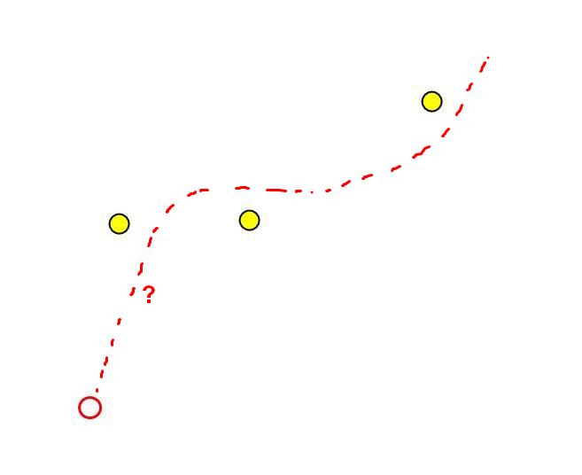
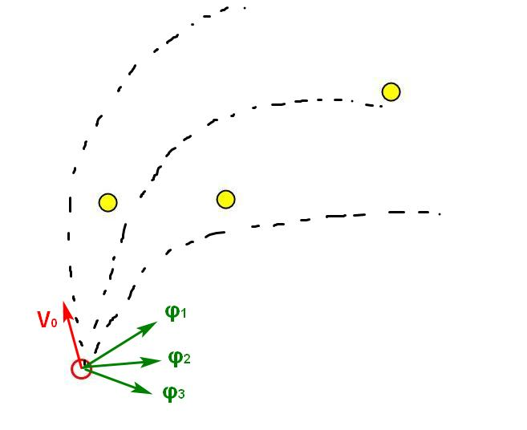
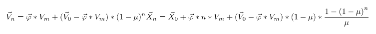
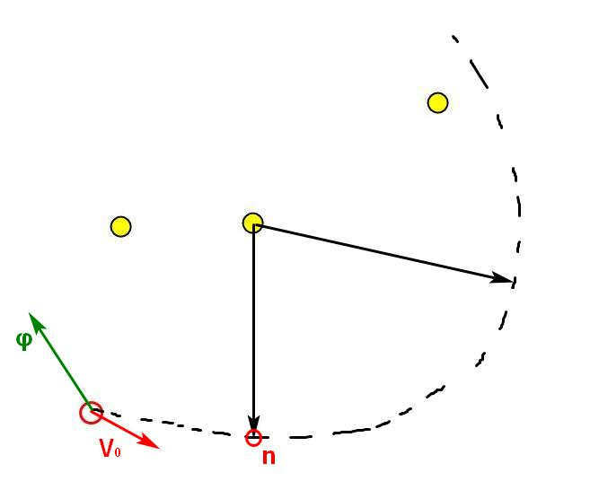
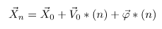
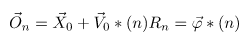
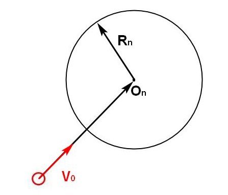
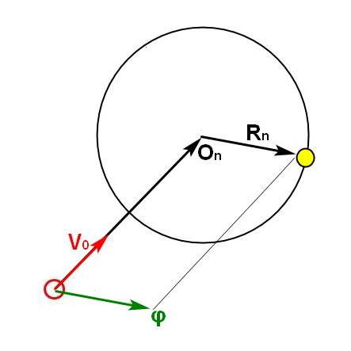
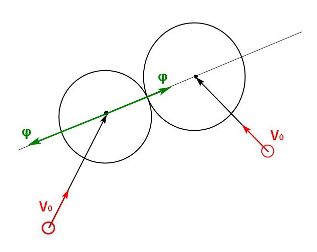

В соревновании MiniAICup#2 (Почти Agar IO) надо управлять амёбами, есть еду и других амёб. Для реализации алгоритма управления амёбой напрашиваются потенциальные поля, но есть одно большое НО.
Физика движения в игре задаются вот такими уравнениями:
speed_x += (nx * max_speed — speed_x) * INERTION_FACTOR / mass;
speed_y += (ny * max_speed — speed_y) * INERTION_FACTOR / mass;
Получается физика с трением и инерцией, которая все портит. Если физику не учитывать, и направлять вектор усилия (nx) прямо на ближайшую цель, то получается вот так:
См. Перемещение агента в игре.gif
Для оптимального поедания еды и противников нужно эти уравнения учитывать.
Для начала приведу их в удобный векторный вид:
Итак, есть поле с едой. На поле собственная амёба с известными координатами и скоростью. Нужно вычислить в какую сторону приложить вектор силы, чтобы съесть еду максимально быстро.

Расчет траекторий движения
Самый очевидный вариант заключается в следующем:
Мы допускаем, что на протяжении следующих T шагов не будем менять вектор силы φ, выбираем K направлений приложения силы и просчитываем траекторию движения по каждому направлению. В каждой точке траектории смотрим, удается ли съесть еду.

Имея вышеуказанные уравнения, просчет траекторий делается очень легко и быстро, но сложность этого такого подхода растет очень быстро. В каждой точке каждой траектории нужно считать, дотягивается ли каждая амёба до каждой еды.
У нас есть:
Все эти числа перемножаются. Когда амёба делится на несколько частей, когда у них большой радиус обзора они видят много еды, алгоритм расчета перестает укладываться в отведенные на вычисления 20 мс.
Тем не менее такой алгоритм поиска еды с некоторыми оптимизациями легко влезает в топ 52.
Имея начальные значения V0 и X0 можно посчитать любую точку траектории сразу на n-ом шаге.
Уравнения движения путем простейших преобразований превращаются вот в это:

Не пугайтесь. Выглядит страшно, особенно уравнение для координаты, но оно вычисляется просто. Здесь Vn и Xn зависят только от начальных условий X0 и V0 времени.
Имея эти уравнения, можно попытаться сразу вывести на каком шаге n, расстояние до наперед заданной еды будет минимальным.

Такой подход очень сильно бы сэкономил вычислительные ресурсы. Отпала бы необходимость вычислять расстояние от каждой еды до каждой точки траектории.
Но аналитически вывести номер такой точки у меня не вышло. Поэтому я воспользовался алгоритмом золотого сечения для поиска точки, имеющей минимально расстояние до заданной еды.
На длине траектории в 100 тиков, этот подход требует вычисления всего 10 точек для нахождения ближайшей к еде.
Однако, испытания показали, что первый описанный метод требует меньше времени на вычисления для траекторий длинной <100 тиков. Может, из-за использованных лямбд, а может из-за какой-то ошибки.
Если внимательно посмотреть на уравнение координаты на n-м шаге, то можно заметить:

Помним, что модуль силы φ равен единице.
Получается, то куда бы ни была направлена сила φ, через время n амеба окажется на окружности (если сила направлен всегда в одну сторону в течение всех шагов n), либо внутри окружности (если направление силы в течении n шагов менялось).
Центр и радиус окружности:


Это и есть область достижимости! За n шагов амеба обязательно будет либо внутри этой области, либо на ее границе!
Как нам это использовать?
Нам необходимо найти такой шаг n, на котором граница области достижимости коснется еды. Взять вектор из центра области достижимости на еду. Это и будет искомое направление силы, задав которое амеба максимально быстро подойдет к еде.

Наведение и уход от врагов
У врагов тоже есть своя область достижимости. Следует найти шаг, на котором своя и вражеские области достижимости соприкоснуться. Если врага нужно догнать, то вектор силы нужно направить по линии, соединяющий центры двух областей достижимости.
Если же надо убежать, то вектор силы надо направить в противоположном направлении.
